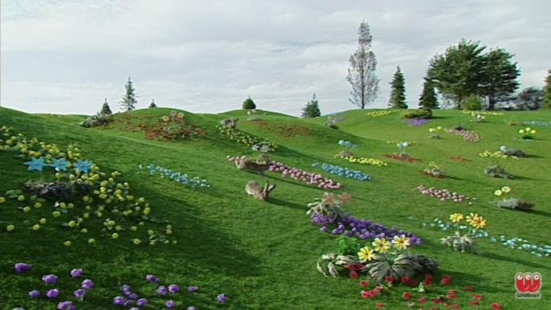
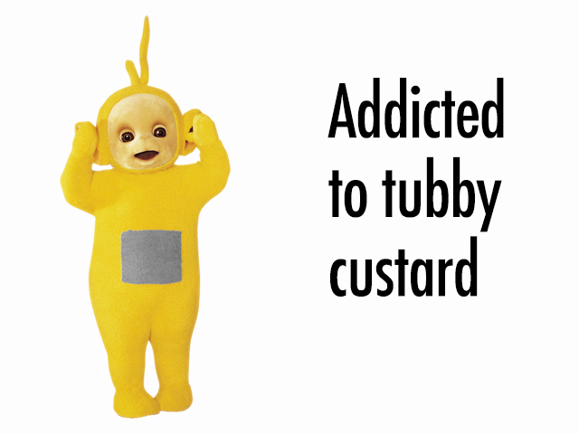

Aqui serão listados alguns tópicos de curiosidades sobre os tubbies
Habitat
Dieta
Anatomia
Definição de Gênero
Inteligência
Natureza
Habitat

Seu habitat natural é chamado de Teletubbyland, uma terra com muitas árvores, arbustos e flores, além de um sol com rosto de bebê humano. Eles vivem e dormem em uma casinha chamada de Home Dome
(ou Tubbytronic Superdome), nome dado por se parecer muito com um domo subterrâneo. Outros seres que vivem nesse mundo são coelhos e o aspirador de pó Noo-Noo.
Dieta
Sobre sua dieta, são criaturas "viciadas" em Tubby Custard (em português chamado de creminho gostoso), pois é a única refeição que os Teletubbies comem todos os dias. Fora do universo, esse creme
se consiste em purê de batata com corante, uma curiosidade pouco conhecida. Ele sai de uma máquina própria, de fácil manuseio e consideravelmente lenta. O creme faz muita sujeira, por isso
os Tubbies costumam usar babadores para comer.

Definições de Gênero
Os gêneros são uma parte bem complicada, pois a única característica que temos pra identificar isso é a voz e a altura. Tinky Winky e Dipsy são machos, e os mais altos do grupo. Po e Laa-Laa, as
mais baixas, são fêmeas. Muitos dos estereótipos de homem e mulher da nossa sociedade não são percebidos aqui, por exemplo: Tinky Winky tem como seu brinquedo favorito uma Bolsa Tote, uma bolsa
considerada item feminino aqui na realidade. Enquanto isso, Laa-Laa gosta mais de brincar de bola, um gosto visto sendo mais comum por garotos. Outros itens que também podem ser vistos como quebra
de estereótipo é a cartola de bolinhas de Dipsy e o patinete de Po.